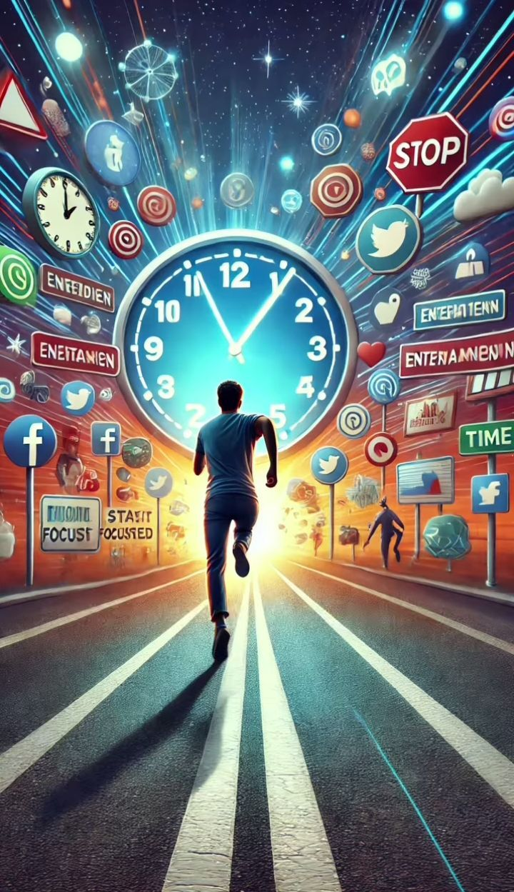
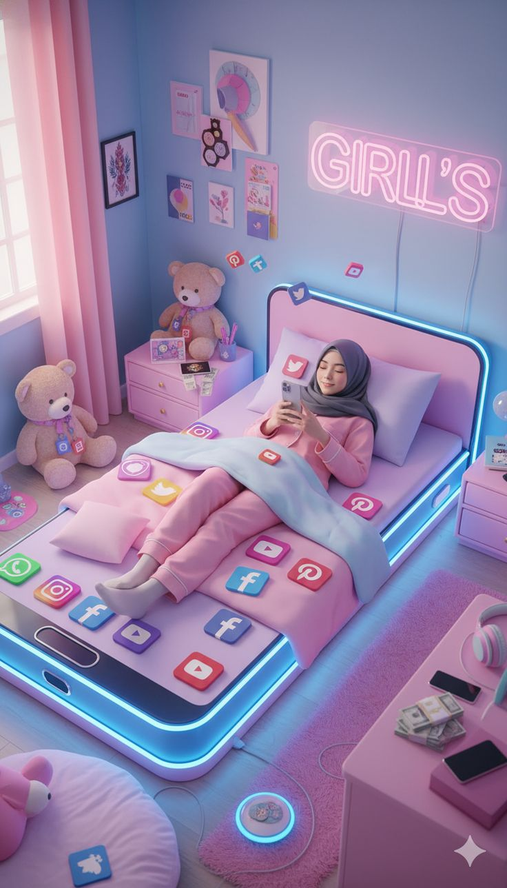

مبادرة CiviStories
[cite_start]صرخة وعي وطنية تكشف "التسونامي الرقمي" الذي يهدد استقرار بيوتنا[cite: 1, 6].




[cite_start]
[cite_start]
١٥ مليار جنيه
خسارة إنتاجية سنوية [cite: 45]
٢.١ مليار جنيه
نصب إلكتروني أسرى [cite: 106]
[cite_start]
٣ دقائق
[cite_start]حالة طلاق [cite: 5]
٥٧%
[cite_start]زيادة طلاق [cite: 24]
٤٠%
عنف أسري [cite: 31]
موقف المؤسسات
الأزهر الشريف
[cite_start]يرصد تسبب السوشيال ميديا في ٣٠% من حالات الطلاق المباشرة (٩٣ ألف حالة سنوياً)[cite: 10, 11].
الكنيسة المصرية
[cite_start]٦٠% من المشاكل الأسرية في المجتمع القبطي مرتبطة بالمنصات الرقمية[cite: 20].
قناة اليوتيوب الرسمية
شاهد قصصنا لإنقاذ النسيج الاجتماعي